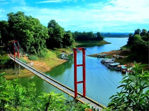

Rangamati Hanging Bridge
Hanging Bridge: Hanging Bridge(Jhulonto Bridge in Bengali)is the landmark icon of Rangamati.It’s a popular tourist spot and a must go destination.If you don’t visit Rangamati you will not discover a big portion of natural beauties of Bangladesh. From Chittagong a 77 km. road amidst green fields and winding hills will take you to Rangamati. It is also connected by waterway from Kaptai.[Hanging Bride, Rangamati] This is the only place to visit through out the year. Rangamati expresses her full beauty in rainy season. Trees becoming greener, waterfalls are in full tide, the river Karnaphuli in her full wave in this season. If you already visited Rangamati in winter, we advice to go there again in monsoon; you will feel the difference of nature yourself.There are other hotels in Rangamati where you can stay. Boating is the prime attraction in Rangamati...
Cox's Bazar Sea Beach

Cox's Bazar is the prime beach and tourist town in Bangladesh, situated alongside the beach of the Bay of Bengal, beside the Indian ocean, having unbroken 120 Kilometer golden sand beach, reachable through motor transport alongside the wavy water . This town is situated in the Chittagong Division in south-eastern Bangladesh, beside 'Myanmar (Burma)'.Cox's Bazar sea beach is the longest sea beach in the world, 120 km long, having no 2nd instance. The wavy water of Bay of Bengal touches the beach throughout this 120 km.For Bangladeshi's it doesn't get much better than Cox's Bazar, the country's most popular beach town than the other one 'Kuakata beach town. It's sort of a Cancun of the east. It's choc-a-bloc with massive well-architectured concrete structures, affluent 5 & 3 star hotels, catering largely to the country's elite and overseas tourists. The beach is only a bit crowded in tourist season, October to March, especially near the hotel-motel zone, but remains virgin during the rest of the year, April to September, when it's better to take a trip there.The part of the 120 km beach is named differently having diversified flora & fauna. It starts with 'Laboni Beach,' Sughandha Beach' within the Cox's Bazar region and 10 km south is known as 'Himchari Beach',30 km fur known as 'Inani Beach' and more 70 km off is the 'Teknaf Beach'. Things should be quieter here, but still expect to draw great attention. The entire 120 km beach can be traveled in one go by motorbike. The more one gets into the south, the more the ocean water becomes...
Sundarbans - World Largest Mangrove Forest

Sundarbans The largest single block of tidal halophytic mangrove forest in the world, located in the southwestern part of Bangladesh. It lies on the Ganges-Brahmaputra Delta at the point where it merges with the bay of bengal. The forest lies a little south to the Tropic of Cancer between the latitudes 21°30'N and 22°30'N, and longitudes 89°00'E and 89°55'E. With its array of trees and wildlife the forest is a showpiece of natural history. It is also a centre of economic activities, such as extraction of timber, fishing and collection of honey. The forest consists of about 200 islands, separated by about 400 interconnected tidal rivers, creeks and canals.The Sundarbans was originally measured (about 200 years ago) to be of about 16,700 sq km. Now it has dwindled to about 1/3 of the original size. Because of the partition of India, Bangladesh received about 2/3 of the forest; the rest is on the Indian side. It is now estimated to be about 6,000 sq km, of which about 1,700 sq km is occupied by waterbodies. The forest lies under two forest divisions, and four administrative ranges viz Chandpai, Sarankhola, Khulna and Burigoalini and has 16 forest stations. It is further divided into 55 compartments and 9 blocks. The Sundarbans was declared as a Reserve Forest in 1875. About 32,400 hectares of the Sundarbans have been declared as three wildlife sanctuaries, and came under the UNESCO World Heritage Site in 1997. These...